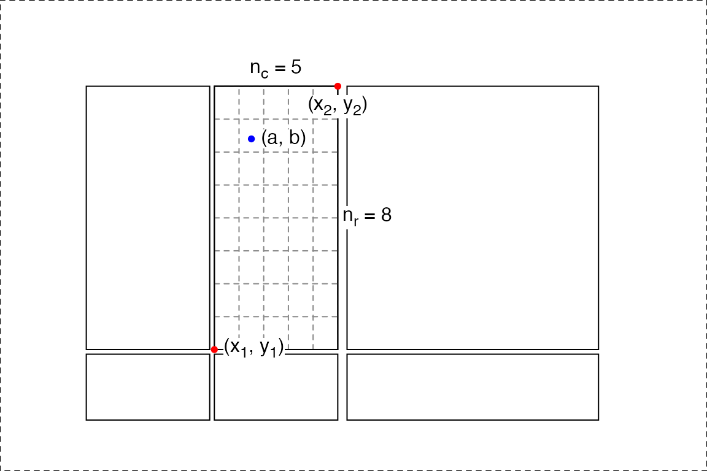
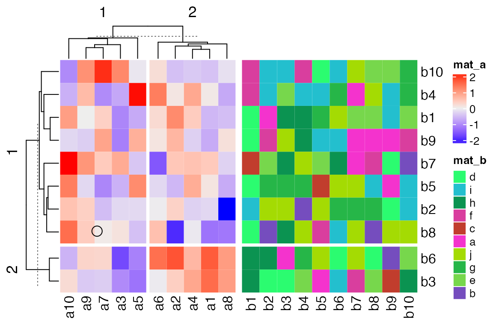

How interactive complex heatmap is implemented
Zuguang Gu ( z.gu@dkfz.de )
2024-02-27
Source:vignettes/implementation.Rmd
implementation.RmdHeatmaps are mainly for visualizing common patterns that are shared by groups of rows and columns. After the patterns are observed, the next step is to extract the corresponding groups of rows and columns from the heatmap, which requires interactivity on the heatmaps. The ComplexHeatmap package is well known for generating static heatmaps (a single heatmap or a list of heatmaps, possibly with complex annotations). Here the package InteractiveComplexHeatmap brings interactivity to ComplexHeatmap. The new functionalities allow users to capture sub-heatmaps by clicking/hovering single cells or selecting areas from heatmaps.
Unlike other packages which support interactive heatmaps based on JavaScript, e.g., iheatmapr, heatmaply and d3heatmap, the package InteractiveComplexHeatmap has a special way to capture the positions that users selected and to extract the corresponding values from the matrices. In this vignette, I will explain in details how the interactivity is implemented based on ComplexHeatmap.
To demonstrate it, I first generate a list of two heatmaps and apply k-means clustering on the numeric heatmap.
library(ComplexHeatmap)
library(InteractiveComplexHeatmap)
set.seed(123)
mat1 = matrix(rnorm(100), 10)
rownames(mat1) = colnames(mat1) = paste0("a", 1:10)
mat2 = matrix(sample(letters[1:10], 100, replace = TRUE), 10)
rownames(mat2) = colnames(mat2) = paste0("b", 1:10)
ht_list = Heatmap(mat1, name = "mat_a", row_km = 2, column_km = 2) +
Heatmap(mat2, name = "mat_b")InteractiveComplexHeatmap implements two types of interactivity:
- on the interactive graphics device,
- on a Shiny app.
The interactivity on the interactive graphics device is the basis of the interactivity of the Shiny app, so in the following sections, I will first introduce how the interactivity is implemneted with the interactive graphics device.
On the interactive graphics device
Here the “interactive graphics device” is the window that is opened for generating plots in your R session if you use R in the terminal or in a native R GUI, or the figure panel in Rstudio IDE.
I will first explain how InteractiveComplexHeatmap captures the positions that user clicked on the device and how it is associated to the values in the matrix.
When user clicks on the device, the physical locations relative in the device (offsets to the bottom left of the device on both x and y directions) are captured by grid::grid.locator(). The physical locations of the heatmaps (more precisely, the heatmap slices) can also be captured by grid::deviceLoc(). With knowing the exact positions of the clicked points and the heatmaps, it is possible to tell which heatmap the clicked points are in. Furthermore, by calculating the relative distance of the clicked points in that heatmap, it is also possible to know which rows and columns the clicked points correspond to.
For associating user’s clicked points and the heatmaps, we first need to calculate the positions of all heatmaps. There is a helper function htPositionsOnDevice() that does this job.
Before executing htPositionsOnDevice(), the heatmap should be drawn on the device and the layout of heatmaps should have been generated so that htPositionsOnDevice() can access various viewports of the plot. Thus, the heatmap object ht_list should be updated explicitly by the draw() function.
The following code draws the heatmap in a device with 6 inches width and 4 inches height.
ht_list = draw(ht_list)
pos = htPositionsOnDevice(ht_list)
The returned object pos is a DataFrame object that contains the positions of all heatmap slices. A DataFrame object (the DataFrame class is defined in S4Vectors package) is bacially very similar to a data frame, but it can store more complex data types, such as the simpleUnit vectors (generated by grid::unit()).
pos## DataFrame with 6 rows and 8 columns
## heatmap slice row_slice column_slice
## <character> <character> <integer> <integer>
## 1 mat_a mat_a_heatmap_body_1_1 1 1
## 2 mat_a mat_a_heatmap_body_1_2 1 2
## 3 mat_a mat_a_heatmap_body_2_1 2 1
## 4 mat_a mat_a_heatmap_body_2_2 2 2
## 5 mat_b mat_b_heatmap_body_1_1 1 1
## 6 mat_b mat_b_heatmap_body_2_1 2 1
## x_min x_max y_min
## <simpleUnit> <simpleUnit> <simpleUnit>
## 1 0.732318701591533inc.. 1.77971604907863inches 1.0313072492669inches
## 2 1.81908612781879inches 2.86648347530589inches 1.0313072492669inches
## 3 0.732318701591533inc.. 1.77971604907863inches 0.432843658241349inc..
## 4 1.81908612781879inches 2.86648347530589inches 0.432843658241349inc..
## 5 2.9452236327862inches 5.07938840650056inches 1.0313072492669inches
## 6 2.9452236327862inches 5.07938840650056inches 0.432843658241349inc..
## y_max
## <simpleUnit>
## 1 3.26768129840847inches
## 2 3.26768129840847inches
## 3 0.991937170526741inc..
## 4 0.991937170526741inc..
## 5 3.26768129840847inches
## 6 0.991937170526741inc..We can confirm whether the positions are correctly captured by the following code. In the next figure, black rectangles correspond to the heatmap slices and the dashed rectangle corresponds to the border of the whole image.

dev.new(width = 6, height = 4)
grid.newpage()
grid.rect(gp = gpar(lty = 2))
for(i in seq_len(nrow(pos))) {
x_min = pos[i, "x_min"]
x_max = pos[i, "x_max"]
y_min = pos[i, "y_min"]
y_max = pos[i, "y_max"]
pushViewport(viewport(x = x_min, y = y_min, name = pos[i, "slice"],
width = x_max - x_min, height = y_max - y_min,
just = c("left", "bottom")))
grid.rect()
upViewport()
}Yes, the positions of all heatmap slices are correctly captured!
Since now we know the location of the clicked points (by grid::grid.locator()) and the positions of all heatmap slices, it is possible to calculate which row and which column in the original matrix user’s click corresponds to.
In the next figure, the blue point with the coordinate \((a, b)\) is clicked by user. The heatmap slice where user clicked into has range \((x_1,x_2)\) on x direction and range \((y_1, y_2)\) on y direction and this heatmap slice can be easily found by comparing the locations of every heatmap slice to the position of the click. There are \(n_r\) rows (\(n_r =8\)) and \(n_c\) columns (\(n_c = 5\)) in this heatmap slice and they are marked by dashed lines. Note all the coordinate values (i.e., \(a\), \(b\), \(x_1\), \(y_1\), \(x_2\) and \(y_2\)) are measured as the physical positions in the graphics device.

In this heatmap slice, the row index \(i_r\) and column index \(i_c\) of the cell where the point is in can be calculated as (assume the left bottom corresponds to the index of 1 for both rows and columns):
\[ i_c = \lceil \frac{a - x_1}{x_2 - x_1} \cdot n_c \rceil \] \[ i_r = \lceil \frac{b - y_1}{y_2 - y_1} \cdot n_r \rceil \]
where the symbol \(\lceil x \rceil\) means the ceiling of the numeric value \(x\). In ComplexHeatmap, the row with index 1 is always put on the top of the heatmap, then \(i_r\) should be adjusted as:
\[ i_r = n_r - \lceil \frac{b - y_1}{y_2 - y_1} \cdot n_r \rceil + 1 \]
The subset of row and column indices of the original matrix that belongs to the selected heatmap slice is already stored in ht_list object (they can be retrieved by row_order() and column_order() function), thus, we can obtain the row and column index of the original matrix that corresponds to user’s point easily with \(i_r\) and \(i_c\).
Denote the matrix for the complete heatmap (without slicing) as \(M\), and denote the subset of row and column indices in that heatmap as \(o^{\mathrm{row}}\) and \(o^{\mathrm{col}}\). Note, \(o^{\mathrm{row}}\) and \(o^{\mathrm{col}}\) can be reordered due to clustering. Then the row and column indices (\(j_r\) and \(j_c\)) for the selected point in \(M\) are
\[j_r = o^{\mathrm{row}}_{i_r}\] \[j_c = o^{\mathrm{col}}_{i_c}\]
And the corresponding value in \(M\) is \(M_{j_r, j_c}\).
InteractiveComplexHeatmap has two functions selectPosition() and selectArea() which allow users to pick single positions or select areas from the heatmaps. Under the interactive graphics device, users do not need to run htPositionsOnDevice() explicitly. The positions of heatmaps are automatically calculated, cached and reused if the heatmaps are the same and the device has not changed its size. If users changed the device size, htPositionsOnDevice() will be automatically re-executed.
The next image shows an example of using selectPosition().
Interactively, the function asks user to click one position on the heatmap. The function returns a DataFrame which contains the heatmap name, slice name and the row/column index of the matrix in that heatmap.
## DataFrame with 1 row and 6 columns
## heatmap slice row_slice column_slice row_index
## <character> <character> <numeric> <numeric> <integer>
## 1 mat_a mat_a_heatmap_body_1_2 1 2 9
## column_index
## <integer>
## 1 1The output means, the position user clicked is in a heatmap called “mat_a”, in its first row slice and the second column slice. Assume mat is the matrix sent to heatmap “mat_a”, then the clicked point correspond to the value mat[9, 1].
If the position clicked is not in any of the heatmap slices, the function returns NULL.
Similarly, the selectArea() function asks user to click two positions on the heatmap which defines an area.
Note since the selected area may overlap over multiple heatmaps and slices, the function returns a DataFrame with multiple rows which contains the heatmap names, slice names and the row/column indices in that heatmap. An example output is as follows.
## DataFrame with 4 rows and 6 columns
## heatmap slice row_slice column_slice row_index
## <character> <character> <numeric> <numeric> <IntegerList>
## 1 mat_a mat_a_heatmap_body_1_2 1 2 7,5,2,...
## 2 mat_a mat_a_heatmap_body_2_2 2 2 6,3
## 3 mat_b mat_b_heatmap_body_1_1 1 1 7,5,2,...
## 4 mat_b mat_b_heatmap_body_2_1 2 1 6,3
## column_index
## <IntegerList>
## 1 2,4,1,...
## 2 2,4,1,...
## 3 1,2,3,...
## 4 1,2,3,...The columns row_index and column_index are stored in IntegerList format. To get the row indices in e.g. mat_a_heatmap_body_1_2 (in the first row), user can use either one of the following command (assume the DataFrame object is called df):
df[1, "row_index"][[1]]
unlist(df[1, "row_index"])
df$row_index[[1]]The rectangle and the points that mark the area can be turned off by setting mark argument to FALSE.
On off-screen graphics devices
It is also possible to use selectPosition() and selectArea() on other off-screen graphics devices, such as pdf() or png(). Now you cannot select the positions interactively, but instead you can specify pos argument in selectPosition() and pos1/pos2 in selectArea() to simulate clicks. The values for pos, pos1 and pos2 all should be a unit object of length two which correspond to the x and y coordinate of the positions.

## Point: x = 3.0 cm, y = 3.0 cm (measured in the graphics device)
##
## The heatmaps have been changed. Calculate new heatmap positions.
## Search in heatmap 'mat_a'
## - row slice 1, column slice 1 [mat_a_heatmap_body_1_1]... overlap
pos## DataFrame with 1 row and 8 columns
## heatmap slice row_slice column_slice row_index
## <character> <character> <numeric> <numeric> <integer>
## 1 mat_a mat_a_heatmap_body_1_1 1 1 8
## column_index row_label column_label
## <integer> <character> <character>
## 1 7 a8 a7
pdf(...)
ht_list = draw(ht_list)
pos = selectArea(ht_list, pos1 = unit(c(3, 3), "cm"), pos2 = unit(c(5, 5), "cm"))
dev.off()## Point 1: x = 3.0 cm, y = 3.0 cm (measured in the graphics device)
## Point 2: x = 5.0 cm, y = 5.0 cm (measured in the graphics device)
##
## Heatmap positions are already calculated, use the cached one.
## Search in heatmap 'mat_a'
## - row slice 1, column slice 1 [mat_a_heatmap_body_1_1]... overlap
## Search in heatmap 'mat_a'
## - row slice 1, column slice 2 [mat_a_heatmap_body_1_2]... overlap
## Search in heatmap 'mat_a'
## - row slice 2, column slice 1 [mat_a_heatmap_body_2_1]... no overlap
## Search in heatmap 'mat_a'
## - row slice 2, column slice 2 [mat_a_heatmap_body_2_2]... no overlap
## Search in heatmap 'mat_b'
## - row slice 1, column slice 1 [mat_b_heatmap_body_1_1]... no overlap
## Search in heatmap 'mat_b'
## - row slice 2, column slice 1 [mat_b_heatmap_body_2_1]... no overlap
pos## DataFrame with 2 rows and 8 columns
## heatmap slice row_slice column_slice row_index
## <character> <character> <numeric> <numeric> <IntegerList>
## 1 mat_a mat_a_heatmap_body_1_1 1 1 7,5,2,...
## 2 mat_a mat_a_heatmap_body_1_2 1 2 7,5,2,...
## column_index row_label column_label
## <IntegerList> <CharacterList> <CharacterList>
## 1 7,3,5 a7,a5,a2,... a7,a3,a5
## 2 6 a7,a5,a2,... a6Users do not need to use this functionality directly with an off-screen graphics device, however, it is very useful when developing a Shiny app where the plot is actually generated under an off-screen graphics device. I will explain it in the next section.
Shiny app
With the three functions htPositionsOnDevice(), selectPosition() and selectArea(), it is possible to implement Shiny apps for interactively working with heatmaps. Now the problem is how does the server side capture the positions that user clicked on the web page. Luckily, there is a solution for this. The output heatmap is normally put within a shiny::plotOutput() and plotOutput() provides two actions click and brush. Then on the server side, it is possible to get the information of the positions that user clicked. The positions can then be set to selectPosition() and selectArea() via pos or pos1/pos2 arguments to correctly correspond to the values in original matrices.